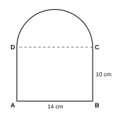

| පරීක්ෂකගේ ප්රයෝජනය සඳහා පමණි | |
|---|---|
| I කොටස – A | / 30 |
| I කොටස – B | / 20 |
| II කොටස | / 50 |
| එකතුව | / 100 |
A කොටස – සියලුම ප්රශ්නවලට දී ඇති ඉඩෙහි පිළිතුරු සපයන්න. (එකකට ලකුණු 2)
එකතුව සොයන්න: 11012 + 1112 (පිළිතුර දෙකේ පාදයෙන් දෙන්න)
අගය සොයන්න: (23)2 × 2−4
3.4672 දශමස්ථාන දෙකකට වටයන්න.
සංඛ්යා රටාවක n වන පදය 4n − 1 වේ. එහි 20 වන පදය සොයන්න.
සංඛ්යාවකින් 34 ක් 27 කි. එම සංඛ්යාව සොයන්න.
මුදලකින් 18% ක් රු. 54 කි. එම මුදල සොයන්න.
ප්රසාරණය කර සුළු කරන්න: (x + 5)(x − 3)
දිග 2 m, පළල 1.5 m හා උස 1 m වූ සෘජුකෝණාස්රාකාර ටැංකියක් පිරවීමට ජලය ලීටර් කීයක් අවශ්යද?
A හා B අචල ලක්ෂ්ය දෙකකි. A හා B ට සම දුරින් පිහිටි ලක්ෂ්යවල පථය නම් කරන්න.
s = a + b + c2 සූත්රය භාවිතයෙන්, a = 5, b = 7 හා c = 8 වන විට s හි අගය සොයන්න.
පාද 7 cm, 24 cm හා 25 cm වූ ත්රිකෝණයක් සෘජුකෝණී ත්රිකෝණයක් බව පෙන්වන්න.
වස්තුවක ස්කන්ධය 3.2 × 105 g වේ. මෙය සාමාන්ය සංඛ්යාවක් ලෙස ද කිලෝග්රෑම්වලින් ද ලියන්න.
සවිධි අෂ්ටාස්රයක බාහිර කෝණයක විශාලත්වය සොයන්න.
සංඛ්යා රේඛාවේ නිරූපණය කර ඇති අසමානතාව ලියා, එය තෘප්ත කරන සියලු නිඛිල ලියන්න.
සුළු කරන්න: 2x + 32x
B කොටස – ප්රශ්න දෙකටම මෙම පත්රයේම පිළිතුරු සපයන්න. (එකකට ලකුණු 10)
නැවක් H වරායේ සිට 060° දිගංශයෙන් 40 km ක් A ලක්ෂ්යයට යාත්රා කරයි. A සිට 150° දිගංශයෙන් 30 km ක් B ලක්ෂ්යයට යාත්රා කරයි.
සෘජුකෝණාස්රාකාර ජල ටැංකියක දිග 1.2 m, පළල 0.8 m හා උස 1 m වේ.
ප්රශ්න පහකට පමණක් පිළිතුරු සපයන්න. (එකකට ලකුණු 10)
y = 3 − x හා y = x + 1 ශ්රිත සඳහා අසම්පූර්ණ අගය වගු පහත දැක්වේ.
y = 3 − x
| x | −1 | 0 | 1 | 2 | 3 | 4 |
|---|---|---|---|---|---|---|
| y | 4 | … | 2 | … | 0 | −1 |
y = x + 1
| x | −1 | 0 | 1 | 2 | 3 | 4 |
|---|---|---|---|---|---|---|
| y | 0 | 1 | … | 3 | … | 5 |
පහත නිර්මාණ සඳහා cm/mm පරිමාණයක් සහිත සරල දාරයක් හා කවකටුවක් පමණක් භාවිත කරන්න. සියලු නිර්මාණ රේඛා දක්වන්න.
රූපය සෑදී ඇත්තේ ABCD සෘජුකෝණාස්රයකින් හා DC පාදය මත ඇඳි අර්ධ වෘත්තයකිනි. AB = 14 cm හා BC = 10 cm වේ. (π = 227)
